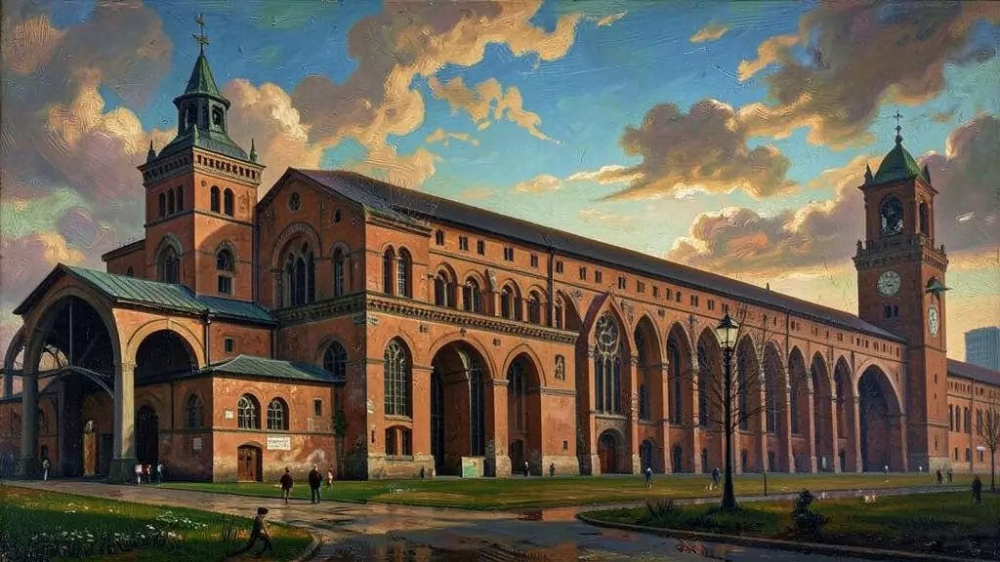
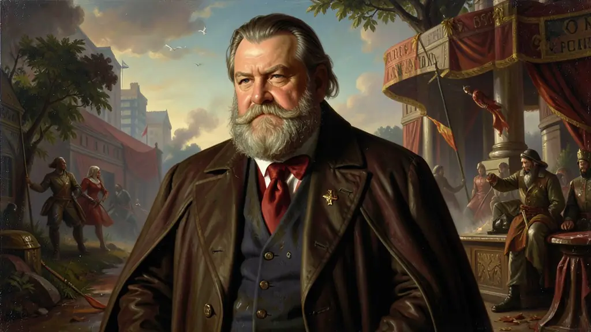
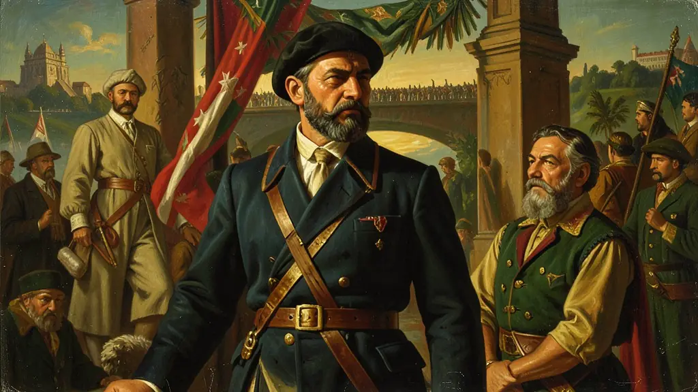

Capítulo 01
1. Zollverein: A Unificação pelo Bolso
Antes de ser política, a unificação alemã foi econômica. A Prússia criou o Zollverein, uma zona de livre comércio entre os estados germânicos que excluía a Áustria. Isso permitiu que a indústria alemã crescesse rápido e que as ferrovias conectassem as cidades prussianas com as bávaras. Quando Bismarck assumiu, o terreno econômico para uma só nação já estava pronto.

Capítulo 02
2. Bismarck e a Política do Sangue e Ferro
Bismarck declarou que os grandes problemas da época não seriam resolvidos com discursos, mas com 'Sangue e Ferro'. Ele modernizou o exército prussiano, transformando-o na máquina de guerra mais eficiente do mundo. Sua diplomacia era cínica e genial: ele isolava seus inimigos um a um antes de atacá-los, garantindo vitórias rápidas e territórios estratégicos.

Capítulo 03
3. Garibaldi e o Risorgimento Italiano
A Itália era dividida entre o norte rico e industrial, o sul pobre e agrário, e os Estados Pontifícios (do Papa) no meio. Garibaldi, com o apoio do povo, conquistou o sul (Reino das Duas Sicílias) em uma campanha relâmpago. Ele abriu mão do poder em favor do Rei Vítor Emanuel II para garantir a união do país, um gesto raro de patriotismo que o tornou mito nacional.

Capítulo 04
4. Sedan e a Humilhação Francesa
A batalha final da unificação alemã ocorreu em Sedan, onde o imperador francês Napoleão III foi preso. Os alemães proclamaram o seu Império (Reich) dentro da Galeria dos Espelhos do Palácio de Versalhes, o maior símbolo do orgulho francês. A perda da Alsácia-Lorena transformou a França em uma eterna inimiga da Alemanha, esperando a primeira chance para se vingar.
Capítulo 05
5. Consequências: Corrida Armamentista
Com a unificação alemã, o equilíbrio de forças na Europa acabou. A Inglaterra passou a temer a marinha alemã, e a Rússia temia o avanço terrestre prussiano. O mundo entrou na 'Paz Armada', um período onde todos se preparavam para o conflito que parecia inevitável. As unificações foram o pavio que acendeu o século XX de guerras.
As unificações da Itália e da Alemanha no final do século XIX alteraram o equilíbrio de poder na Europa, sendo marcos do nacionalismo burguês. Inspiradas pelos ideais liberais e impulsionadas por burguesias desejosas de mercados maiores e padronizados, as unificações foram processos conduzidos 'de cima para baixo'. Na Prússia de Otto von Bismarck, a 'Política do Ferro e Sangue' usou a guerra contra Áustria e França para cimentar a unidade alemã sob a égide autoritária do II Reich.
Na Itália, o processo de *Risorgimento* foi mais fragmentado, divido entre o republicanismo de Garibaldi e a monarquia de Cavour e do Reino da Sardenha-Piemonte. A unificação deixou sequelas: a Alemanha emergiu como a maior potência militar e industrial do continente, enquanto a Itália permaneceu dividida entre um Norte industrial e um Sul agrário e pobre. Esse nacionalismo ufanista que uniu estes novos Estados foi o precursor das tensões imperialistas que desembocariam na Primeira Guerra Mundial.
Para o Enem, o estudo das unificações é central para compreender a desintegração do sistema do Congresso de Viena e o surgimento das rivalidades europeias modernas. A análise da figura de Bismarck permite discutir como o Estado pode cooptar as classes populares (através da criação dos primeiros seguros sociais) para garantir a ordem interna enquanto expande sua influência externa. As unificações provam que o mapa europeu, longe de ser estático, foi forjado através da diplomacia e da violência industrializada.
Fonte: HOBSBAWM, Eric. A Era do Capital (1848-1875). Rio de Janeiro: Paz e Terra, 2012.
Atividades interativas
Questões para fixar
A unificação alemã, concluída em 1871 sob a liderança da Prússia, teve como um de seus principais resultados a anexação de territórios franceses. Quais eram esses territórios e qual sentimento geraram na França?
O 'Zollverein', crucial para a unificação alemã, consistia em: